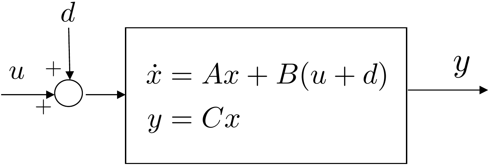
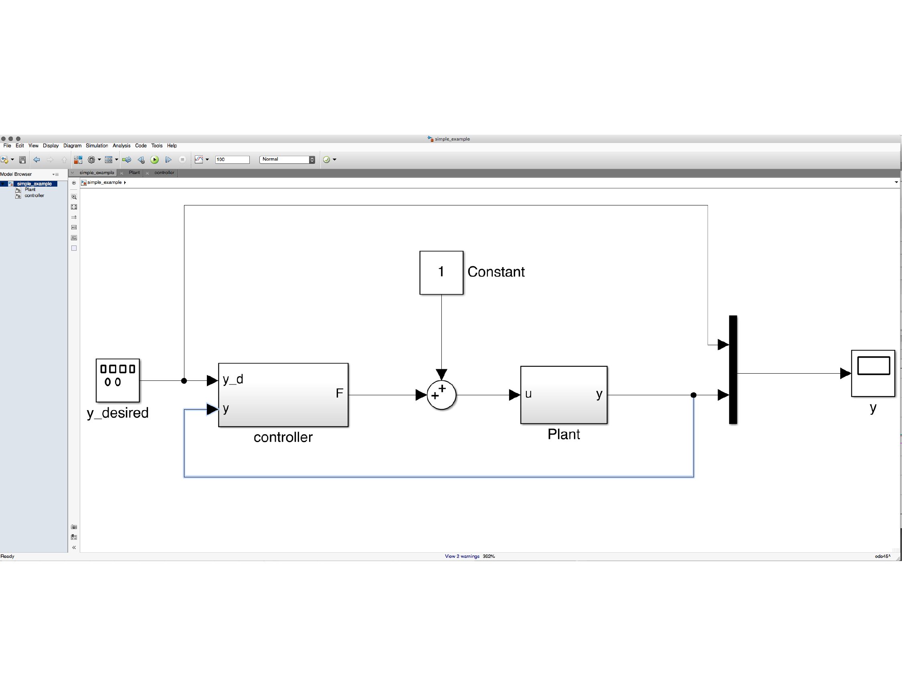
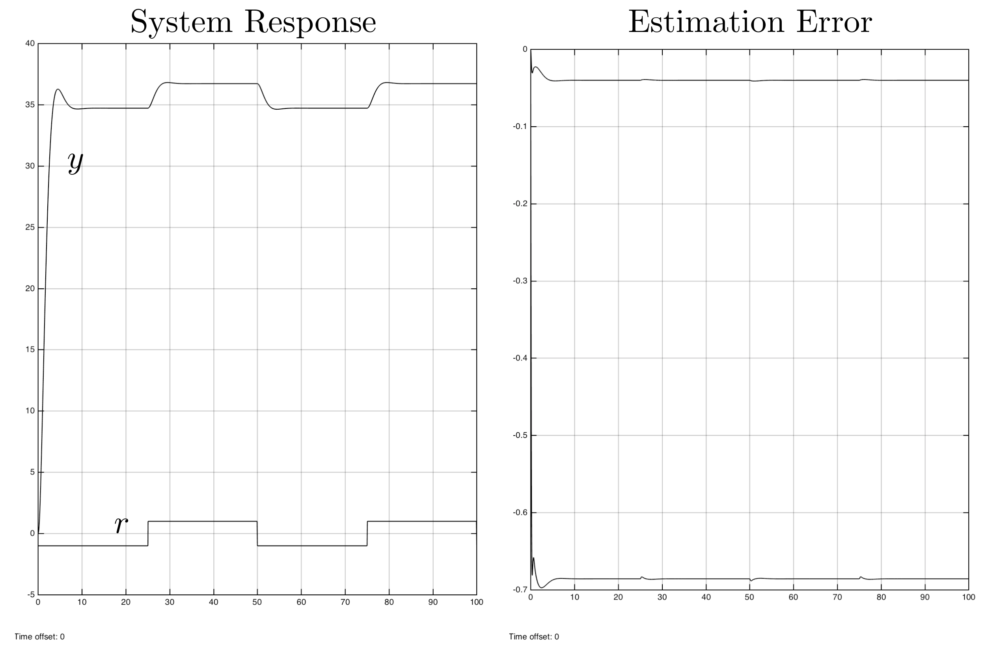
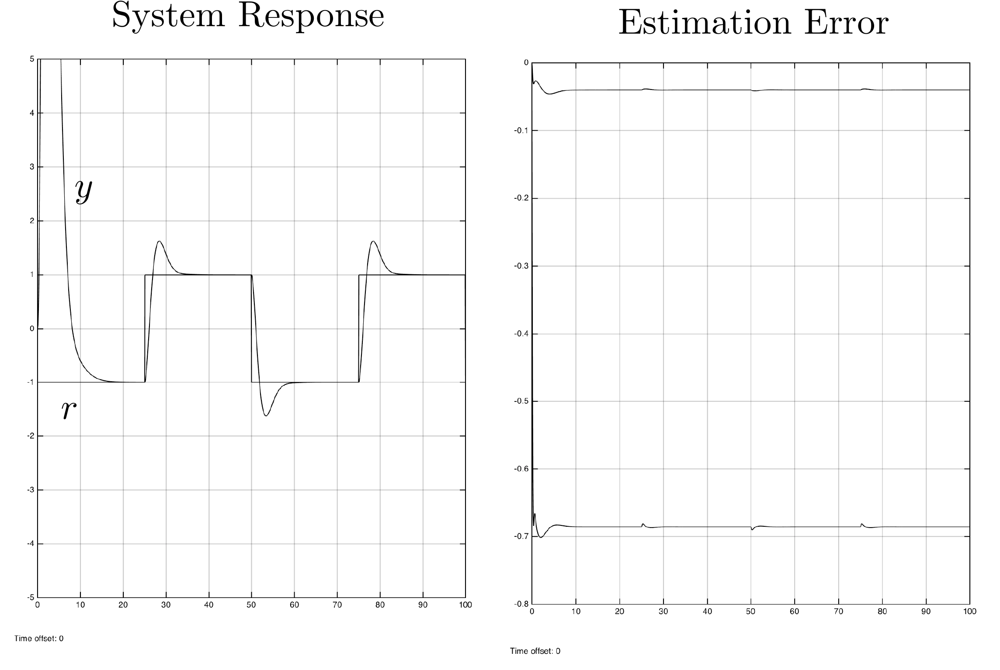
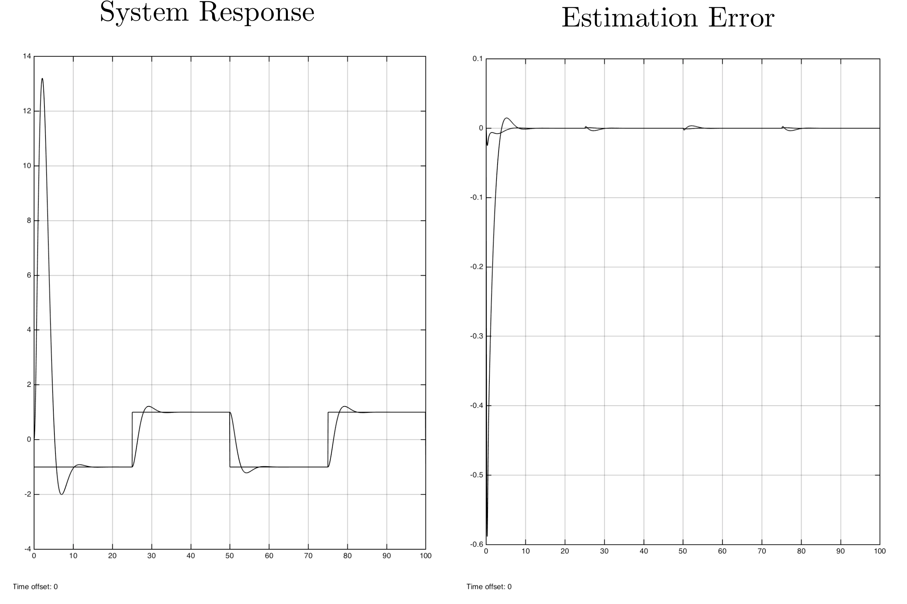

In previous sections we have discussed that modeling errors and other
real-world effects result in an input disturbance to the system as shown
in
Fig.14.1.

Figure 14.1. Input disturbance to plant modeled by
state-space equations.
The objective of this section is to explain the effect of the
disturbance on an observer. It turns out that the disturbance creates a
steady-state bias in the observer states. We will also describe how the
observer can be augmented to estimate the disturbance and to remove the
steady-state observation error. This is the dual of adding an integrator
to a state-space system.
To understand the effect of the disturbance on the observer, note
that when the disturbance is present, the state-space equations for the
system are \[\begin{aligned}
\dot{x} &= Ax + B(u+d) \\
y &= C x.
\end{aligned}\] The standard equation for the observer is \[\tag{14.1}
\dot{\hat{x}} = A\hat{x} + Bu + L(y-C\hat{x}).\] Defining the
observation error as \(e=x-\hat{x}\)
and taking the derivative with respect to time gives \begin{align}
\dot{e} &= \dot{x}-\dot{\hat{x}} \\
&= Ax + Bu + Bd - A\hat{x} - Bu - LCx + LC\hat{x} \notag\\
&= (A-LC)e + Bd. \tag{14.3}
\end{align} Taking the Laplace transform of both sides while
accounting for the initial condition, and solving for \(E(s)\) gives \[E(s) = (sI-(A-LC))^{-1}e(0) +
(sI-(A-LC))^{-1}B\mathcal{L}\{d(t)\}.\] Therefore, the error is
due to two terms. The first term involves the initial conditions \(e(0)\) and decays to zero if the
eigenvalues of \(A-LC\) are in the open
left half of the complex plane. The second term is driven by the
disturbance and for a constant bounded disturbance, it will result in a
constant bounded observation error.
If the disturbance \(d(t)\) were
perfectly known, then we could modify the observer in
Equation 14.1 as \[\tag{14.4}
\dot{\hat{x}} = A\hat{x} + B(u+d) + L(y-C\hat{x}),\] so that the
evolution of the observation error becomes \[\begin{aligned}
\dot{e} &= \dot{x}-\dot{\hat{x}} \\
&= Ax + B(u+d) - A\hat{x} - B(u+d) - LCx + LC\hat{x} \\
&= (A-LC)e,
\end{aligned}\] which, in contrast to
Equation 14.3 is not
driven by the disturbance \(d\).
However, since \(d\) is not known it
needs to be estimated. The basic idea in this chapter is to estimate
\(d\) using an augmented
observer.
If we assume that \(d\) is constant,
then the differential equation that governs the evolution of \(d\) is given by \(\dot{d}=0\). Therefore, if we augment the
state \(x\) of the system with the
disturbance, then the equations of motion can be written as \[\begin{aligned}
\begin{pmatrix} \dot{x} \\ \dot{d} \end{pmatrix} &= \begin{pmatrix}
A & B \\ \mathbf{0} & 0 \end{pmatrix} \begin{pmatrix} x \\
d\end{pmatrix} + \begin{pmatrix} B \\ 0 \end{pmatrix} u \\
y &= \begin{pmatrix} C & 0 \end{pmatrix} \begin{pmatrix} x \\ d
\end{pmatrix}.
\end{aligned}\] Define the augmented state-space matrices as
\[\begin{aligned}
A_2 &= \begin{pmatrix} A & B \\ \mathbf{0} & 0 \end{pmatrix}
\\
C_2 &= \begin{pmatrix} C & 0 \end{pmatrix}.
\end{aligned}\] If \((A_2,C_2)\)
are observable, then using the
techniques discussed in
Chapter 16 we can design an observer for the
augmented system, where the augmented observer equations are \[\begin{pmatrix}\dot{\hat{x}} \\ \dot{\hat{d}}
\end{pmatrix} = \begin{pmatrix} A & B \\ \mathbf{0} & 0
\end{pmatrix}\begin{pmatrix} \hat{x} \\ \hat{d}\end{pmatrix} +
\begin{pmatrix} L \\ L_d\end{pmatrix} \left( y - \begin{pmatrix} C &
0 \end{pmatrix} \begin{pmatrix} \hat{x} \\ \hat{d} \end{pmatrix} \right)
+ \begin{pmatrix} B \\ 0 \end{pmatrix} u\] or in component form
\[\begin{aligned}
\dot{\hat{x}} &= A\hat{x} + B\left(u+\hat{d}\right) + L (y-C\hat{x})
\\
\dot{\hat{d}} &= L_d (y-C\hat{x}),
\end{aligned}\] where the gain \(L_2 =
(L^\top, L_d)^\top\) is obtained using the Ackermann formula
\[L_2 =
\mathcal{O}_{A_2,C_2}^{-1}(\mathcal{A}_{A_2}^\top)^{-1}(\boldsymbol{\beta}_d-\mathbf{a}_{A_2})^\top,\]
where \(\mathbf{a}_{A_2}\) is obtained
from the characteristic polynomial of \(A_2\), and \(\boldsymbol{\beta}_d\) is obtained from the
desired characteristic polynomial for \(A_2-L_2C_2\). Alternatively, \(L_2\) can be found using the Python place
command:
import control as cnt
L2 = cnt.place(A2.T,C2.T,desired_observer_poles).T
14.1.1 Simple Example
Consider the example in
Sections 14.2.1,
15.2.1,
and 16.2.1. A block diagram
for the system is shown in
Fig.14.2, where a
constant input disturbance has been added to the system.

Figure 14.2. Block diagram for a simple example, where
a constant input disturbance has been added to the system.
Suppose that a standard feedback controller without an integrator and
without a disturbance observer is designed for this system. An example
of potential Python code is
import numpy as np
import control as cnt
P.A = np.array([[0., 1.0], [2.0, 3.0]])
P.B = np.array([[0.], [4.0]])
P.C = np.array([[5.0, 0]])
P.D = 0
P.Ts = 0.01 #sampling time
# pick poles for the controller
wn_ctrl = 1
zeta_ctrl = 0.707
charpoly = [1., 2.0*zeta_ctrl*wn_ctrl, wn_ctrl**2]
des_ctrl_poles = np.roots(charpoly)
# pick poles for the observer
wn_obsv = 10.0
zeta_obsv = 0.707
charpoly = [1., 2.0*zeta_obsv*wn_obsv, wn_obsv**2]
des_obsv_poles = np.roots(charpoly)
# is the system controllable?
if np.linalg.matrix_rank(cnt.ctrb(P.A, P.B)) != np.size(P.A, 1):
print('System Not Controllable')
else:
P.K = cnt.place(P.A, P.B, des_ctrl_poles)
P.kr = -1.0/(P.C*np.linalg.inv(P.A-P.B*P.K)*P.B)
# is the system observable?
if np.linalg.matrix_rank(cnt.obsv(P.A, P.C)) != np.size(P.A, 1):
print('System Not Observable')
else:
P.L = cnt.place(P.A.T, P.C.T, des_obsv_poles).T
The associated control code is
# variables 'xhat' and 'u' must be declared as global, or
# class member variables for the sake of persistence, and the
# measurement 'y' and reference input 'r' must be passed in.
N = 10
# solve the observer differential equations using N steps of
# RK1 for i = 1 to N
for i in range(N):
self.xhat = self.xhat + P.Ts/N*(P.A*self.xhat + \
P.B*self.u + \
P.L*(y-P.C*self.xhat))
# observer-based update with feedback controller
self.u = P.kr*r - P.K*self.xhat
The step response for this controller is shown in
Fig.14.3, where it is
obvious that the input disturbance is causing a large steady-state error
in the system response, as well as in the estimation error.

Figure 14.3. Step response for standard observer-based
control without integrator and without disturbance
observer.
Figure 14.3 (Interactive). Adjust disturbance and reference to see
steady-state and estimation-error behavior.
If an integrator is added to the system using the following design
file
# design file with integrator
integrator_pole = -1.0
# augment system to add integrator
P.A1 = np.block([[P.A, np.zeros((2,1))], [-P.C, 0]])
P.B1 = np.block([[P.B], [0]])
# is this system controllable?
if np.linalg.matrix_rank(cnt.ctrb(P.A1, P.B1)) != np.size(P.A1, 1):
print('System Not Controllable')
else:
K1 = cnt.place(P.A1, P.B1, np.concatenate((des_ctrl_poles,
[integrator_pole])))
P.K = K1[0,0:-1]
P.ki = K1[0, -1]
and the control code listed below:
# variables 'xhat,' 'error_d1, 'integrator,' and 'u' must be
# declared as global, or class member variables for the sake
# of persistence, and the measurement 'y' and reference input
# 'r' must be passed in.
N = 10
# solve the observer differential equations using N steps of
# RK1 for i = 1 to N
for i in range(N):
self.xhat = self.xhat + P.Ts/N*(P.A*self.xhat + \
P.B*self.u + \
P.L*(y-P.C*self.xhat))
# implement the integrator
error = r-y
self.integrator = self.integrator + \
(P.Ts/2.0)*(error+self.error_d1)
self.error_d1 = error
# observer-based feedback controller
self.u = -P.K*self.xhat - P.ki*self.integrator
The response of the system with the integrator is shown in
Fig.14.4, where it is
clear that the steady-state error in the response has been removed, but
where there is now a steady-state response in the estimation error.

Figure 14.4. Step response for observer-based control
with integrator but without disturbance observer.
Figure 14.4 (Interactive). Adjust disturbance and integrator gain to see
tracking and estimation-error tradeoffs.
Now consider the case where the integrator is not present, but we add
a disturbance observer. The design code is listed below.
# is the system controllable?
if np.linalg.matrix_rank(cnt.ctrb(P.A, P.B)) != np.size(P.A, 1):
print('System Not Controllable')
else:
P.K = cnt.place(P.A, P.B, des_ctrl_poles)
P.kr = -1.0/(P.C*np.linalg.inv(P.A-P.B*P.K)*P.B)
# augment system for disturbance observer
disturb_obsv_pole = -2.0
P.A2 = np.block([[P.A, P.B], [np.zeros((1,2)), 0]])
P.B2 = np.block([[P.B], [0]])
P.C2 = np.block([P.C, 0])
# is the system observable?
if np.linalg.matrix_rank(cnt.obsv(P.A2, P.C2)) != np.size(P.A2, 1):
print('System Not Observable')
else:
P.L2 = cnt.place(P.A2.T, P.C2.T,
np.concatenate((des_obsv_poles,
[disturb_obsv_pole]))).T
The associated control code is listed below.
# variables 'x_obsv' and 'u' must be declared as global, or
# class member variables for the sake of persistence, and the
# measurement 'y' and reference input 'r' must be passed in.
N = 10
# solve the observer differential equations using N steps of
# RK1 for i = 1 to N
for i in range(N):
self.x_obsv = self.x_obsv + P.Ts/N*(P.A2*self.x_obsv + \
P.B2*self.u + \
P.L2*(y-P.C2*self.x_obsv))
xhat = self.x_obsv[0, 0:-1]
dhat = self.x_obsv[0, -1]
# observer-based feedback controller with disturbance observer
self.u = P.kr*r - P.K*self.xhat - dhat
Note the presence of \(\hat{d}\) on
Line 13. The disturbance estimate is subtracted from the control input
on Line 16. The resulting system response is shown in
Fig.14.5.

Figure 14.5. Step response for observer-based control
with a disturbance observer rather than an integrator.
Figure 14.5 (Interactive). Adjust disturbance and disturbance-observer
gain to compare disturbance rejection.
Note that in this case, the steady-state error in both the system
response and the estimation error has been removed. At this point, the
integrator can be added back into the system to remove the effect of
model mismatch and other disturbances on the system.
(a) Modify the simulation from
HW 3.1.16 so that the uncertainty parameter
in arm_dynamics.m is \(\alpha=0.2\), representing 20% inaccuracy
in the knowledge of the system parameters and so that the input
disturbance is \(0.5\) Newton-meters.
Also, add noise to the output channel \(\theta_m\) with a standard deviation of
\(0.001\). Before adding the
disturbance observer, run the simulation and note that the controller is
not robust enough to handle the large input disturbance.
(b) Add a disturbance observer to the controller, and verify that the
steady-state error in the estimator has been removed. Tune the system to
get good response.
Design Study A guided exercise
Add a disturbance observer
Augment the observer so it
estimates a constant input disturbance along with the plant state.
Step 1. Disturbance model
Show solution for Step
1
Answer: A constant disturbance is
modeled with \(\dot{d}=0\).
Step 2. Augmented observer order
Show solution for Step
2
Answer: The observer estimates
two plant states plus one disturbance state.
Step
3. Purpose
Show solution for Step
3
Answer: Estimating the
disturbance lets the controller compensate for it, improving disturbance
rejection and steady-state tracking.
Pseudocode
The complete solution includes a simulation
script and a disturbance-observer controller class. Before opening it,
outline each component separately.
These prompts
are ungraded. They are intended to connect the disturbance-observer
design to the implementation code in the complete solution.
Complete solution
The single link robot arm is simulated using the following Python
code.
Note that in this simulation, the uncertainty parameter is \(\alpha=0.2\) implying \(20%\) variation in the plant parameters,
and that the noise and disturbance are not zero.
A Python class that implements observer-based control with an
integrator and disturbance observer for the single link robot arm is
shown below.
# 3rd-partyimport numpy as npimport control as cnt# local (controlbook)from . import params as Pfrom ..common.controller_base import ControllerBaseclass ArmSSIDOController(ControllerBase):def__init__(self, separate_integrator=True):# control tuning parameters tr =0.489 zeta =0.707 integrator_pole = [-5.0]# augmented system A1 = np.block([[P.A, np.zeros((2, 1))], [-P.Cr, np.zeros(1)]]) B1 = np.vstack((P.B, 0))# check controllabilityif np.linalg.matrix_rank(cnt.ctrb(A1, B1)) !=3:raiseValueError("System not controllable")# compute control gains wn =2.2/ tr # assumes zeta = 0.707 des_char_poly = [1, 2* zeta * wn, wn**2] des_sys_poles = np.roots(des_char_poly) des_poles = np.hstack((des_sys_poles, integrator_pole))self.K1 = cnt.place(A1, B1, des_poles)self.K =self.K1[:, :2]self.ki =self.K1[:, 2:]# linearization pointself.x_eq = P.x_eqself.r_eq = P.Cr @self.x_eqself.x1_eq = np.hstack((self.x_eq, 0))# integrator variablesself.error_prev =0.0self.error_integral =0.0self.separate_integrator = separate_integrator####### OBSERVER DESIGN ######### observer tuning parameters M_obs =10.0# time scale separation between controller and observer tr_obs = tr / M_obs zeta_obs =0.707 disturbance_pole = [-5.0]# augmented systemself.A2 = np.block([[P.A, P.B], [np.zeros((1, 3))]])self.B2 = np.block([[P.B], [np.zeros(1)]])self.C2 = np.block([P.Cm, np.zeros(1)])# check observabilityif np.linalg.matrix_rank(cnt.ctrb(self.A2.T, self.C2.T)) !=3:raiseValueError("System not observable")# compute observer gain matrix wn_obs =2.2/ tr_obs obs_char_poly = [1, 2* zeta_obs * wn_obs, wn_obs**2] obs_sys_poles = np.roots(obs_char_poly) obs_poles = np.hstack((obs_sys_poles, disturbance_pole))self.L2 = cnt.place(self.A2.T, self.C2.T, obs_poles).Tprint("L2^T:", self.L2.T)# observer variablesself.x2hat_tilde = np.zeros(3)self.u_prev = np.zeros(1)self.x2_eq = np.hstack((self.x_eq, [0]))def update_with_state(self, r, x):raiseNotImplementedError("This controller only uses measurement feedback.")def update_with_measurement(self, r, y):# update the observer with the measurement xhat, dhat =self.observer_rk4_step(y) x_tilde = xhat -self.x_eq# integrate error error = r - P.Cr @ xhat # can also use tilde vars (eq subtracts out)self.error_integral += P.ts * (error +self.error_prev) /2self.error_prev = error# compute feedback controlifself.separate_integrator: u_tilde =-self.K @ x_tilde -self.ki @self.error_integralelse: x1_tilde = np.hstack((x_tilde, self.error_integral)) u_tilde =-self.K1 @ x1_tilde# convert back to original variables (for feedback linearization) theta = xhat[0] u_fl = P.m * P.g * P.ell /2* np.cos(theta)# subtract the disturbance estimate to actively compensate for disturbances u_unsat = u_tilde + u_fl - dhat u =self.saturate(u_unsat, u_max=P.tau_max)# save the previous control input for the observerself.u_prev = ureturn u, xhat, dhatdef observer_f(self, x2hat_tilde, y): x2hat = x2hat_tilde +self.x2_eq y_error = y -self.C2 @ x2hat # can also use tilde vars (eq subtracts out) u_fl = P.m * P.g * P.ell /2* np.cos(x2hat[0]) u_tilde =self.u_prev - u_fl x2hat_dot =self.A2 @ x2hat_tilde +self.B2 @ u_tilde +self.L2 @ y_errorreturn x2hat_dotdef observer_rk4_step(self, y): k1 =self.observer_f(self.x2hat_tilde, y) k2 =self.observer_f(self.x2hat_tilde + P.ts /2* k1, y) k3 =self.observer_f(self.x2hat_tilde + P.ts /2* k2, y) k4 =self.observer_f(self.x2hat_tilde + P.ts * k3, y) x2hat_tilde_dot = (k1 +2* k2 +2* k3 + k4) /6self.x2hat_tilde += x2hat_tilde_dot * P.ts# unpack estimated state and disturbance xhat_tilde =self.x2hat_tilde[:-1] xhat = xhat_tilde +self.x_eq dhat =self.x2hat_tilde[-1:]return xhat, dhat.copy()
Complete simulation code for MATLAB, Python, and Simulink can be
downloaded at http://controlbook.byu.edu.
(a) Modify the simulation from
HW 3.2.16 so that the uncertainty parameter
in pendulum_dynamics.m is \(\alpha=0.2\), representing 20% inaccuracy
in the knowledge of the system parameters, and so that the input
disturbance is \(0.5\). Also, add noise
to the output channels \(z_m\) and
\(\theta_m\) with a standard deviation
of \(0.001\). Before adding the
disturbance observer, run the simulation and note that the controller is
not robust to the large input disturbance.
(b) Add a disturbance observer to the controller, and verify that the
steady-state error in the estimator has been removed. Tune the system to
get good response.
Design
Study B guided exercise
Add a disturbance observer
Augment the observer so it can estimate a constant input
disturbance.
Step 1. Baseline failure mode
Show solution for Step
1
Answer: With uncertainty and
disturbance, the observer-based controller can have steady-state
error.
Step 2. Disturbance model
Show solution for
Step 2
Answer: A constant
disturbance is modeled using dot d = 0.
Step 3.
Noise level
Show
solution for Step 3
Answer: The
problem adds measurement noise with standard deviation
0.001.
Pseudocode
The complete solution includes a simulation
script and a disturbance-observer controller class. Before opening it,
outline each component separately.
These
prompts are ungraded. They are intended to connect the derivation to the
implementation code in the complete solution.
Complete solution
The inverted pendulum is simulated using the following Python
code.
Note that in this simulation, the uncertainty parameter is \(\alpha=0.2\) implying \(20%\) variation in the plant parameters,
and that the noise and disturbance are not zero.
A Python class that implements observer-based control with an
integrator and disturbance observer for the inverted pendulum is shown
below.
# 3rd-partyimport numpy as npimport control as cnt# local (controlbook)from . import params as Pfrom ..common.controller_base import ControllerBaseclass CartPendulumSSIDOController(ControllerBase):def__init__(self, separate_integrator=True):# tuning parameters tr_theta =0.8# tuned for slower, more stable response.# May be necessary due to initial value for theta (10 degrees). zeta_theta =0.9 M =3 tr_z = tr_theta * M zeta_z =0.9 integrator_pole = [-2.0]# augmented system A1 = np.block([[P.A, np.zeros((4, 1))], [-P.Cr, np.zeros(1)]]) B1 = np.vstack((P.B, 0))# check controllabilityif np.linalg.matrix_rank(cnt.ctrb(A1, B1)) !=5:raiseValueError("System not controllable")# compute gains wn_theta =0.5* np.pi / (tr_theta * np.sqrt(1- zeta_theta**2)) theta_char_poly = [1, 2* zeta_theta * wn_theta, wn_theta**2] theta_poles = np.roots(theta_char_poly) wn_z =0.5* np.pi / (tr_z * np.sqrt(1- zeta_z**2)) z_char_poly = [1, 2* zeta_z * wn_z, wn_z**2] z_poles = np.roots(z_char_poly) des_poles = np.hstack([theta_poles, z_poles, integrator_pole])self.K1 = cnt.place(A1, B1, des_poles)self.K =self.K1[:, :4]self.ki =self.K1[:, 4:]# linearization pointself.x_eq = P.x_eqself.r_eq = P.Cr @self.x_eqself.u_eq = P.u_eq# integrator variablesself.error_prev =0.0self.error_integral =0.0self.separate_integrator = separate_integrator####### OBSERVER DESIGN ######### observer tuning parameters M_obs =10.0# time scale separation between controller and observer tr_theta_obs = tr_theta / M_obs zeta_theta_obs =0.9 tr_z_obs = tr_z / M_obs zeta_z_obs =0.9 disturbance_pole = [-1.0]# augmented systemself.A2 = np.block([[P.A, P.B], [np.zeros((1, 5))]])self.B2 = np.block([[P.B], [np.zeros(1)]])self.C2 = np.block([P.Cm, np.zeros((2, 1))])# check observabilityif np.linalg.matrix_rank(cnt.ctrb(self.A2.T, self.C2.T)) !=5:raiseValueError("System not observable")# compute observer gain matrix wn_theta_obs =2.2/ tr_theta_obs theta_obs_char_poly = [1, 2* zeta_theta_obs * wn_theta_obs, wn_theta_obs**2] theta_obs_poles = np.roots(theta_obs_char_poly) wn_z_obs =2.2/ tr_z_obs z_obs_char_poly = [1, 2* zeta_z_obs * wn_z_obs, wn_z_obs**2] z_obs_poles = np.roots(z_obs_char_poly) obs_poles = np.hstack((theta_obs_poles, z_obs_poles, disturbance_pole))self.L2 = cnt.place(self.A2.T, self.C2.T, obs_poles).Tprint("L^T:", self.L2.T)# observer variablesself.x2hat_tilde = np.zeros(5)self.u_prev = np.zeros(1)self.x2_eq = np.hstack((self.x_eq, [0]))def update_with_state(self, r, x):raiseNotImplementedError("This controller only uses measurement feedback.")def update_with_measurement(self, r, y):# update the observer with the measurement xhat, dhat =self.observer_rk4_step(y)# convert to linearization (tilde) variables x_tilde = xhat -self.x_eq r_tilde = r -self.r_eq# integrate error error = r - P.Cr @ xhat # can also use tilde vars (eq subtracts out)self.error_integral += P.ts * (error +self.error_prev) /2self.error_prev = error# compute feedback controlifself.separate_integrator: u_tilde =-self.K @ x_tilde -self.ki @self.error_integralelse: x1_tilde = np.hstack((x_tilde, self.error_integral)) u_tilde =-self.K1 @ x1_tilde# convert back to original variables and compensate for the disturbance u_unsat = u_tilde +self.u_eq - dhat u =self.saturate(u_unsat, u_max=P.force_max)# save the previous control input for the observerself.u_prev = ureturn u, xhat, dhatdef observer_f(self, x2hat_tilde, y): x2hat = x2hat_tilde +self.x2_eq y_error = y -self.C2 @ x2hat # can also use tilde vars (eq subtracts out) u_tilde =self.u_prev -self.u_eq x2hat_dot =self.A2 @ x2hat_tilde +self.B2 @ u_tilde +self.L2 @ y_errorreturn x2hat_dotdef observer_rk4_step(self, y): k1 =self.observer_f(self.x2hat_tilde, y) k2 =self.observer_f(self.x2hat_tilde + P.ts /2* k1, y) k3 =self.observer_f(self.x2hat_tilde + P.ts /2* k2, y) k4 =self.observer_f(self.x2hat_tilde + P.ts * k3, y) x2hat_tilde_dot = (k1 +2* k2 +2* k3 + k4) /6self.x2hat_tilde += x2hat_tilde_dot * P.ts# unpack the state and disturbance estimates xhat_tilde =self.x2hat_tilde[:-1] xhat = xhat_tilde +self.x_eq dhat =self.x2hat_tilde[-1:]return xhat, dhat.copy()
Complete simulation code for MATLAB, Python, and Simulink can be
downloaded at http://controlbook.byu.edu.
(a) Modify the simulation from
HW 3.3.16 so that the uncertainty parameter
in satellite_dynamics.m is \(\alpha=0.2\), representing 20% inaccuracy
in the knowledge of the system parameters and so that the input
disturbance is \(1.0\) Newton-meters.
Also, add noise to the output channels \(\phi_m\) and \(\theta_m\) with a standard deviation of
\(0.001\). Before adding the
disturbance observer, run the simulation and note that the controller is
not robust to the large input disturbance.
(b) Add a disturbance observer to the controller, and verify that the
steady-state error in the estimator has been removed. Tune the system to
get good response.
Design Study C guided exercise
Plan the satellite disturbance observer
The
disturbance observer estimates the input disturbance that the ordinary
observer-based controller cannot reject robustly.
Step 1.
Stress-test conditions
Show solution for Step
1
Answer: Use 20 percent
uncertainty, a 1 Nm input disturbance, and measurement noise with
standard deviation 0.001.
Step 2. What
gets estimated?
Show solution for Step
2
Answer: The disturbance observer
estimates the input disturbance and removes the steady-state estimator
error.
Pseudocode
Complete solution
The satellite is simulated using the following Python code.
Note that in this simulation, the uncertainty parameter is \(\alpha=0.2\) implying \(20%\) variation in the plant parameters,
and that the noise and disturbance are not zero.
A Python class that implements observer-based control with an
integrator and disturbance observer for the satellite is shown
below.
# 3rd-partyimport numpy as npimport control as cnt# local (controlbook)from . import params as Pfrom ..common.controller_base import ControllerBaseclass SatelliteSSIDOController(ControllerBase):def__init__(self, separate_integrator=False):# tuning parameters tr_theta =2.0 zeta_theta =0.9 M =3# time separation factor between inner and outer loop tr_phi = tr_theta * M zeta_phi =0.9 integrator_pole = [-1.0]# augmented system A1 = np.block([[P.A, np.zeros((4, 1))], [-P.Cr, np.zeros(1)]]) B1 = np.vstack((P.B, 0))# check controllabilityif np.linalg.matrix_rank(cnt.ctrb(A1, B1)) !=5:raiseValueError("System not controllable")# compute gains wn_theta =0.5* np.pi / (tr_theta * np.sqrt(1- zeta_theta**2)) theta_char_poly = [1, 2* zeta_theta * wn_theta, wn_theta**2] theta_poles = np.roots(theta_char_poly) wn_phi =0.5* np.pi / (tr_phi * np.sqrt(1- zeta_phi**2)) phi_char_poly = [1, 2* zeta_phi * wn_phi, wn_phi**2] phi_poles = np.roots(phi_char_poly) des_poles = np.hstack([theta_poles, phi_poles, integrator_pole])self.K1 = cnt.place(A1, B1, des_poles)self.K =self.K1[:, :4]self.ki =self.K1[:, 4:]# linearization pointself.x_eq = P.x_eqself.r_eq = P.Cr @self.x_eqself.u_eq = P.u_eq# integrator variablesself.error_prev =0.0self.error_integral =0.0self.separate_integrator = separate_integrator####### OBSERVER DESIGN ######### observer tuning parameters M_obs =10.0# time scale separation between controller and observer tr_theta_obs = tr_theta / M_obs zeta_theta_obs =0.9 tr_phi_obs = tr_phi / M_obs phieta_phi_obs =0.9 disturbance_pole = [-1.0]# augmented systemself.A2 = np.block([[P.A, P.B], [np.zeros((1, 5))]])self.B2 = np.block([[P.B], [np.zeros(1)]])self.C2 = np.block([P.Cm, np.zeros((2, 1))])# check observabilityif np.linalg.matrix_rank(cnt.ctrb(self.A2.T, self.C2.T)) !=5:raiseValueError("System not observable")# compute observer gain matrix wn_theta_obs =2.2/ tr_theta_obs theta_obs_char_poly = [1, 2* zeta_theta_obs * wn_theta_obs, wn_theta_obs**2] theta_obs_poles = np.roots(theta_obs_char_poly) wn_phi_obs =2.2/ tr_phi_obs phi_obs_char_poly = [1, 2* phieta_phi_obs * wn_phi_obs, wn_phi_obs**2] phi_obs_poles = np.roots(phi_obs_char_poly) obs_poles = np.hstack((theta_obs_poles, phi_obs_poles, disturbance_pole))self.L2 = cnt.place(self.A2.T, self.C2.T, obs_poles).Tprint("L^T:", self.L2.T)# observer variablesself.x2hat_tilde = np.zeros(5)self.u_prev = np.zeros(1)self.x2_eq = np.hstack((self.x_eq, [0]))def update_with_state(self, r, x):raiseNotImplementedError("This controller only uses measurement feedback.")def update_with_measurement(self, r, y):# update the observer with the measurement xhat, dhat =self.observer_rk4_step(y)# convert to linearization (tilde) variables x_tilde = xhat -self.x_eq r_tilde = r -self.r_eq# integrate error error = r - P.Cr @ xhat # can also use tilde vars (eq subtracts out)self.error_integral += P.ts * (error +self.error_prev) /2self.error_prev = error# compute feedback controlifself.separate_integrator: u_tilde =-self.K @ x_tilde -self.ki @self.error_integralelse: x1_tilde = np.hstack((x_tilde, self.error_integral)) u_tilde =-self.K1 @ x1_tilde# convert back to original variables and compensate for the disturbance u_unsat = u_tilde +self.u_eq - dhat u =self.saturate(u_unsat, u_max=P.torque_max)# save the previous control input for the observerself.u_prev = ureturn u, xhat, dhatdef observer_f(self, x2hat_tilde, y): x2hat = x2hat_tilde +self.x2_eq y_error = y -self.C2 @ x2hat # can also use tilde vars (eq subtracts out) u_tilde =self.u_prev -self.u_eq x2hat_dot =self.A2 @ x2hat_tilde +self.B2 @ u_tilde +self.L2 @ y_errorreturn x2hat_dotdef observer_rk4_step(self, y): k1 =self.observer_f(self.x2hat_tilde, y) k2 =self.observer_f(self.x2hat_tilde + P.ts /2* k1, y) k3 =self.observer_f(self.x2hat_tilde + P.ts /2* k2, y) k4 =self.observer_f(self.x2hat_tilde + P.ts * k3, y) x2hat_tilde_dot = (k1 +2* k2 +2* k3 + k4) /6self.x2hat_tilde += x2hat_tilde_dot * P.ts# separate state and disturbance estimates xhat_tilde =self.x2hat_tilde[:-1] xhat = xhat_tilde +self.x_eq dhat =self.x2hat_tilde[-1:]return xhat, dhat.copy()
The plant receives a step to a constant input disturbance at
t = 1 s. Change the disturbance
size and the disturbance-observer pole to see how the augmented observer
drives
d
toward the true disturbance through the innovation term
y -
Cx.
Final disturbance
estimateFinal tracking
errorEstimate settling
timeInterpretation
The same plant, controller, and augmented observer structure used in the
chapter example are simulated. The pole slider moves the added
disturbance-estimator pole.
For the matched constant-disturbance model, changing the pole should
mainly change how quickly
d
converges. It should not be interpreted as changing the ideal final
disturbance value.
Chapter 14 comparison
Standard observer vs. disturbance observer
Compare the standard observer-based controller with the augmented
disturbance observer. Both see the same constant input disturbance, but
only the augmented observer estimates
d
and subtracts it from the control input.
Standard final
errorAugmented final
errorFinal
dMain
lesson
Dashed gray traces use the standard observer. Teal traces use the
augmented disturbance observer. Dashed blue marks the reference command;
dashed brown marks the true disturbance.
Chapter 14 code map
Connect the code to the observer equations
Select the mathematical role played by each line from the
disturbance-observer implementation. The goal is to see how the code
implements the augmented equations and the control input \(u = k_r r - K\hat{x} - \hat{d}\).
Correct
matchesFeedback
Chapter 14 observability
Can the augmented disturbance state be observed?
A disturbance observer augments the plant state with a
constant-disturbance state, \(x_2 = [x_1,\;x_2,\;d]^T\). The observer can estimate
\(d\) only when the augmented pair
\((A_2, C_2)\) is observable.
Choose what the sensor measures through \(C\).
Choose where the disturbance enters through \(B_d\).
Check whether the resulting observability matrix has rank 3, which means
both plant states and the added disturbance state can be inferred from
output history.
Observability
matrix
Rank
Interpretation
14.6 Knowledge Check
Q1. Disturbance observer purpose
A disturbance observer is intended to
estimate:
Q2. Model fit
A constant-disturbance observer is most useful
when the disturbance is:
Q3. Augmented observer dimension
If a two-state plant is augmented with one constant-disturbance state,
enter the observer model order.
Show solution
Answer: 3. The augmented observer estimates two plant
states plus one disturbance state.
Q4. Bias reduction
If an output bias is 0.5 without disturbance estimation and 0.1 after
estimation, enter the remaining bias.
Show solution
Answer: 0.1. The disturbance observer reduces the bias
when the disturbance model matches the real disturbance.
Q5. Disturbance classification
Name one disturbance category discussed in the observer/disturbance
chapters.
Show solution
Answer: Examples include input disturbance, output
disturbance, and model uncertainty.
Q6. Constant-disturbance augmentation
How is an unknown constant disturbance commonly
represented in the augmented observer model?
Q7. Using
the disturbance estimate
How should a
disturbance estimate be used in the control law?
Q8. Poor model fit
Which disturbance is least well represented by a
constant-disturbance observer?
14.7 Notes and References
Disturbance observers are one example of how observers can be used to
estimate a variety of different parameters in the system. In general,
observers can be used to estimate model parameters like mass and
inertia, but in this case, nonlinear observers are required. The most
commonly used nonlinear observer is the extended Kalman filter.
Derivations of the extended Kalman filter can be found in [24–26]. In
robotics, observers are used to estimate the system state, but also the
biases in gyroscopes and accelerometers [27], which are a form of input
disturbances.